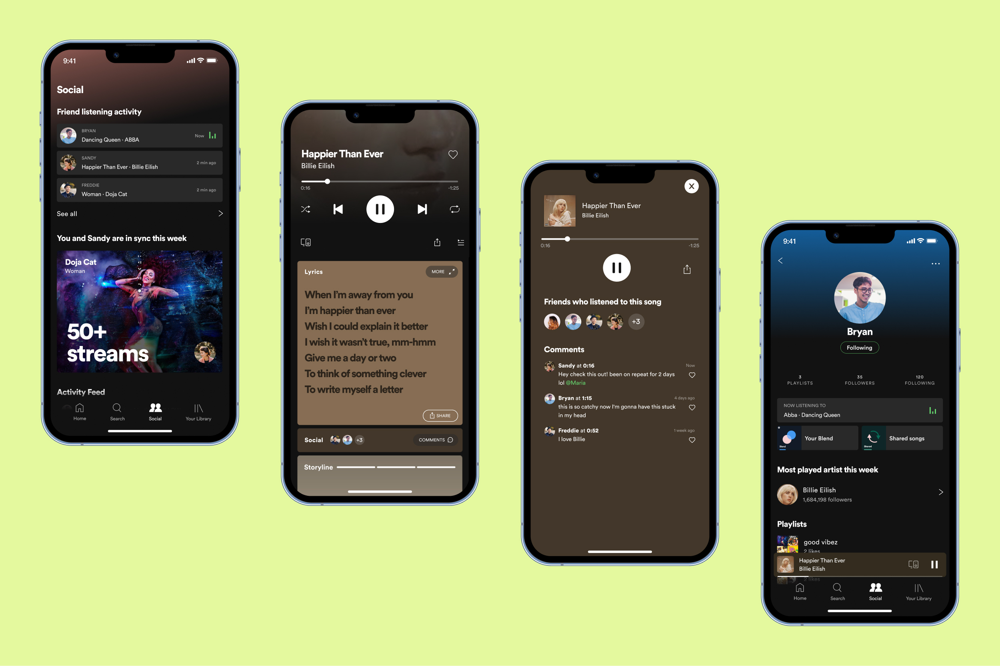

Spotify Social
01 — Project Context
02 — Discovery
We hypothesized that users would want to connect in person. We wanted to probe the idea of an integrated AR feature that would allow users to meet up in person and unlock items, songs, or exclusive content in our exploratory interviews. It was also important to understand users’ pain points, frustrations, likes to determine a feature that enhances the listening experience on Spotify. Through exploratory interviews, we discovered that our assumptions were challenged by our interviewees' responses. An integrated AR feature was not the right fit. These findings allowed us to better understand our users' needs and pivot our strategy and figure out how to create a social feature that facilitates social interactions in app.
03 — Ideation
With the above insights, we generated and ideated different ways of sharing the music experience and came up with 3 main solutions:
04 — High Fidelity + Testing
We added missing elements to the existing design system and jumped into high fidelity sketching of the "Social" feature:
- Adding a "Social" tab to the tabs bar
- Working on the landing page and contents of the "Social" tab
- Adding a "Comments" section and other friends listening to a song's "Now Playing"
- Viewing, liking, and commenting on a song on the "Comments" page of a song
- Viewing your friend's profile to see what they're listening to, your Blend, shared songs, and recent activity
Afterwards, we selected key frames to get users' feedback on the different solutions.
We interpreted users’ feedback and iterated on all the frames to solve potential problem points.
05 — Final Prototype